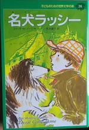
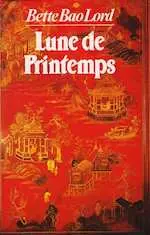

2021
Mars
- 20 — Mars au jardin
Février
- 15 — Le potimarron
- 15 — Mémo associations de plantes au potager
- 15 — Le melon
- 15 (édité) — Le basilic
Janvier
- 29 — Février au jardin
- 28 — Janvier au jardin
- 26 — Poèmes
- 26 —  Avancée dans l’apprentissage du japonais
- 20 — Défilé de robots d’Isaac Asimov
2020
Décembre
- 24 — Pourquoi j’ai mangé mon père de Roy Lewis
- 19 —  Lune de Printemps de Bette Bao Lord
- 07 — Cyprès et autres personnages
- 07 (édité) — Conrad
- 07 (édité) — Thémmé
- 07 (édité) — Martha
- 07 (édité) — Johana
- 07 (édité) — Arletty
- 07 (édité) — Anne-Lys
- 07 (édité) — Rena
- 06 — Les dents de Chastel
- 01 — Maryline trompe la mort de Diatomée
- 01 — Relecture de mon roman Objectif petit ami